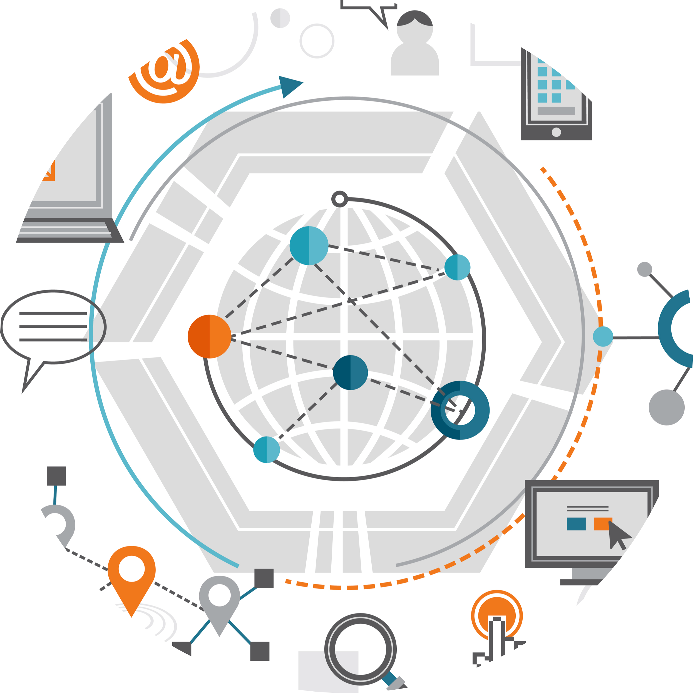

I'm Yusuf
a web developer.

I am a fresh graduate majoring in Informatics Engineering at Gunadarma University. Looking for job opportunities that provide opportunities for further development, WIlling to learn new things, friendly and able to work in a team.
I started learning and interested in computers since I was in junior high school. I also like troubleshooting computers if there are problems.

I studied networking when I was still in high school, I really like networking because we can connect with people who are very far away.
I recently got interested in web programming and I want to be a great web developer.